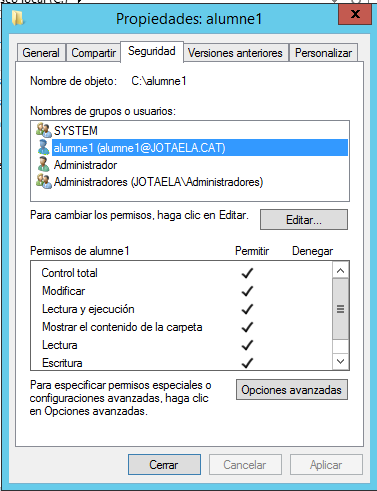

Dominis amb interfície gràfica
1. Validar un equip client al domini:
- El primer pas a seguir serà entrar dins de l'administrador de l'equip i usar l'opció
Cambiar configuracióndel apartatConfiguración de nombre, dominio y grupo de trabajo.
- Aquí canviarem el grup de treball actual pel nou domini amb l'opció
cambiar....

- Sel·leccionarem
Dominioi escriurem el nom del domini. Seguidament li donarem aaceptar. (Els canvis es completaran al reiniciar el PC)
2. Fer que un usuari normal del domini pugui ser administrador d’un equip local:
- El primer és accedir al menú de
Usuarios y equipos de Activa Directory
- Un cop estem dins ens mourem a la UO on tenim els equips i farem
clic dret->propiedadessobre el sostre equip:
- D'aquesta manera ens situarem en el menú d'administració de l'equip local. Si ens movem a
Usuarios y grupos locales->Grupos->Administradores, podrem adjuntar al grup al nostre usuari en qüestió.
1. Crear carpetes d'usuaris (Es pot fer de tres formes diferents):
1. La primera de les formes seria convertir la carpeta documents del client en la carpeta d'usuari:
- Primer hem de crear una carpeta amb el nom de l'usuari a l'arrel del servidor:
-Seguidament l'haurem de compartir amb l'usuari en questió i donar-li els permisos pertinents per a que pugui accedir:
- També li hem de donar permissos locals, tot i que la connexió a la carpeta sigui remota. 
- Finalment, un cop ja hem compartit el recurs ja podem accedir al client i canviar la ubicació de la carpeta documentos per la del recurs compartit:
2. La segona seria assignar-li la carpeta personal des del servidor.
- Primer hem d'accedir a l'eina de gestor d'usuaris i equips del Winows Server. Des d'allí anirem a les
propietatsdel usuari en qüestió ->Perfil. És aquí on assignarem una lletra i el nom dle recurs al apartat de Carpeta particular:
- si ara iniciem sessió amb l'usuari ens surtira la crpeta dins de
Este equipo:
3. L'ultima de les forme de crear la carpeta personal és ferho amb un script.
- Primer Crearem un arxiuanomenat logon.bat a la carpeta compartida
\netlogon:
Dins de l'arxiu escriurem el següent codi :net use Z: \\nomequipserver\%username%
- Ara accedirem a l'eina de gestor d'usuaris i equips del Winows Server. Des d'allí anirem a les
propietatsdel usuari en qüestió ->Perfil. Aquí escriurem el nom del script en la casella deScript de inicio de sesión: - Al entrar al compte amb l'usuari podrem veure la carpeta personal dins de
este equipo: